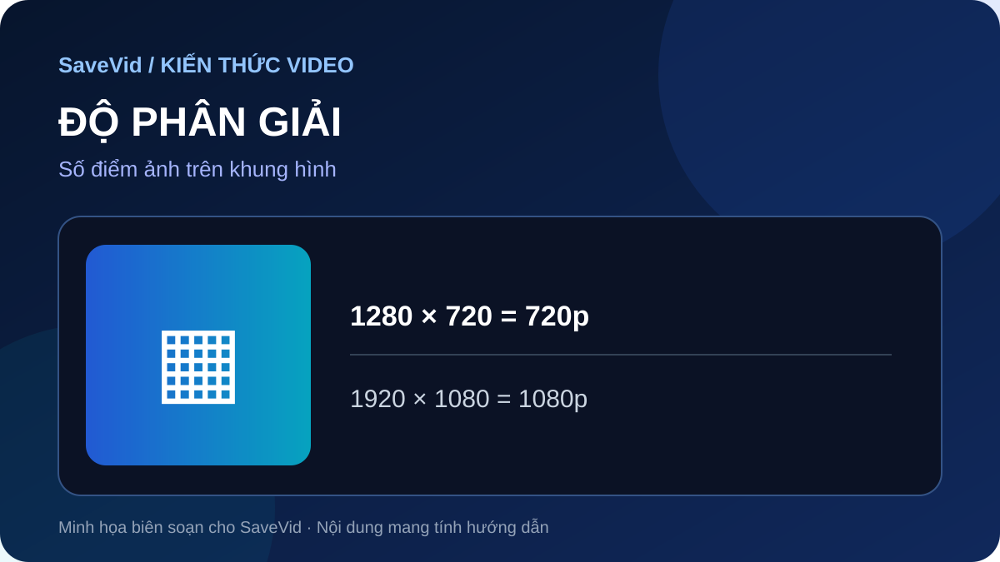
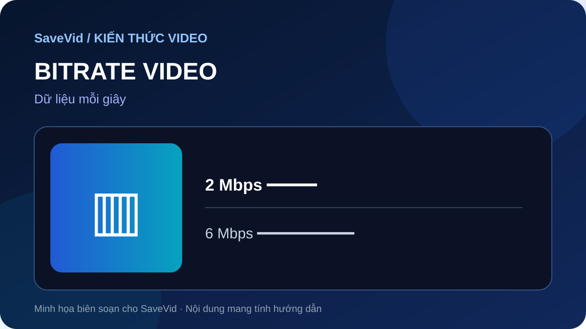

Độ phân giải và bitrate: chọn chất lượng video đúng cách
SaveVid tổng hợp hướng dẫn thực hành giúp bạn hiểu rõ cách sử dụng công cụ video trực tuyến và lựa chọn định dạng phù hợp.

Độ phân giải là gì?
Độ phân giải mô tả số điểm ảnh trong mỗi khung hình. Ví dụ 1280 × 720 thường được gọi là 720p; 1920 × 1080 thường được gọi là 1080p. Với video dọc, số đo chiều cao và chiều rộng có thể được trình bày khác nhau tùy hướng khung hình.

Bitrate ảnh hưởng thế nào?
Bitrate là lượng dữ liệu được mã hóa trong một giây video, thường tính bằng kbps hoặc Mbps. Ở cùng codec và độ phân giải, bitrate cao hơn thường giữ được nhiều chi tiết hơn nhưng làm tệp lớn hơn; không phải lúc nào cũng đồng nghĩa hình ảnh đẹp hơn.

Chọn phiên bản nào?
Ưu tiên độ phân giải phù hợp màn hình và nhu cầu lưu trữ. Khi hai phiên bản cùng độ phân giải, cân nhắc bitrate, codec, kích thước tệp và khả năng tương thích. Không nên mặc định bản có nhãn HD là 1080p nếu API không cung cấp kích thước thực.
SaveVid hiển thị ra sao?
SaveVid chỉ nên hiển thị độ phân giải khi nguồn dữ liệu có chiều rộng hoặc chiều cao xác thực. Nếu nguồn không trả về thông số, nhãn nên ghi chất lượng không xác định thay vì suy đoán.
Lưu ý: Chức năng tải phụ thuộc nền tảng, quyền truy cập và dịch vụ API. Hãy tôn trọng bản quyền của chủ sở hữu nội dung.